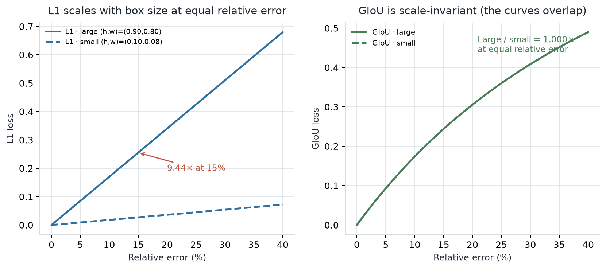
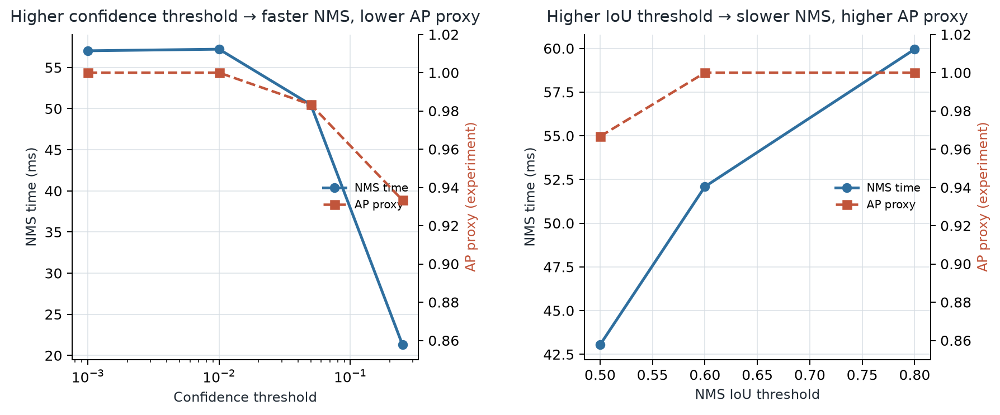
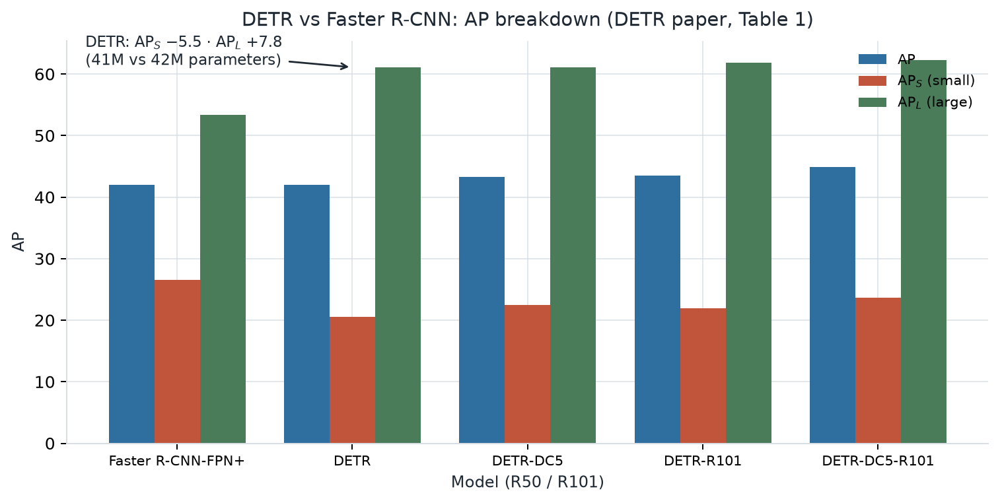
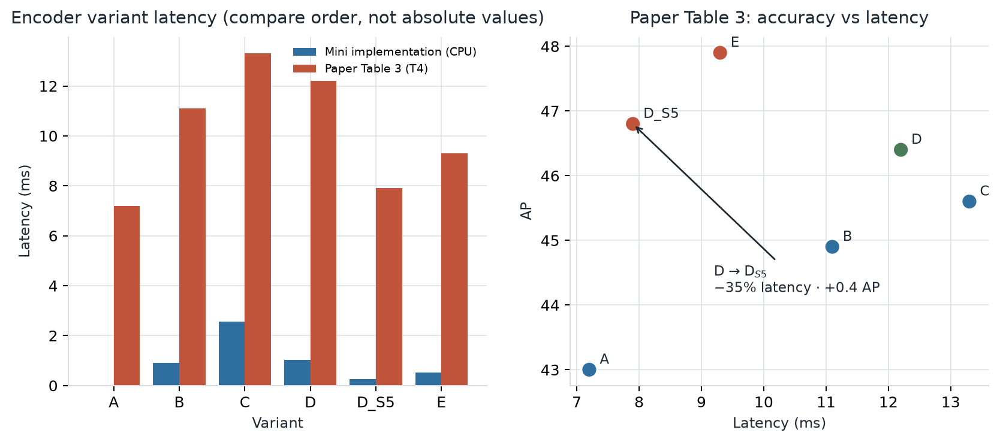
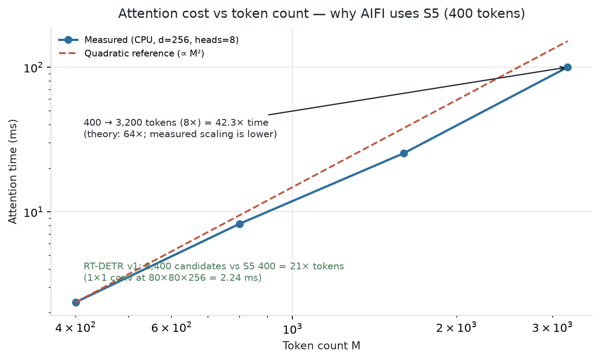
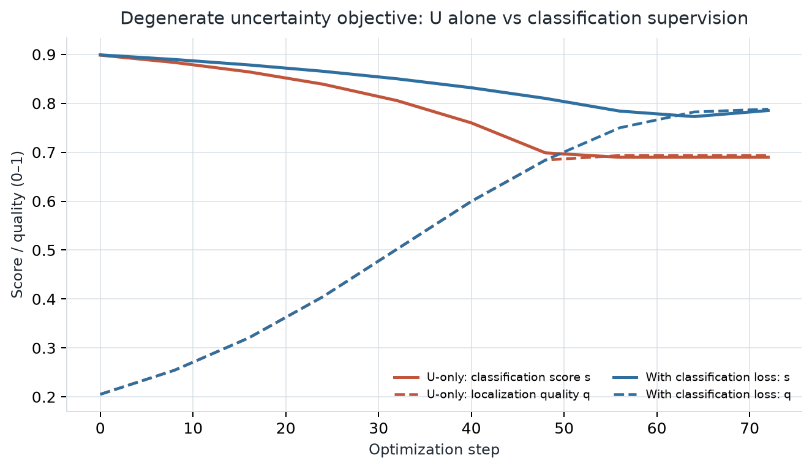
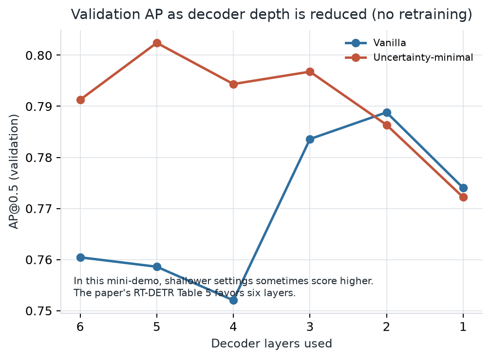
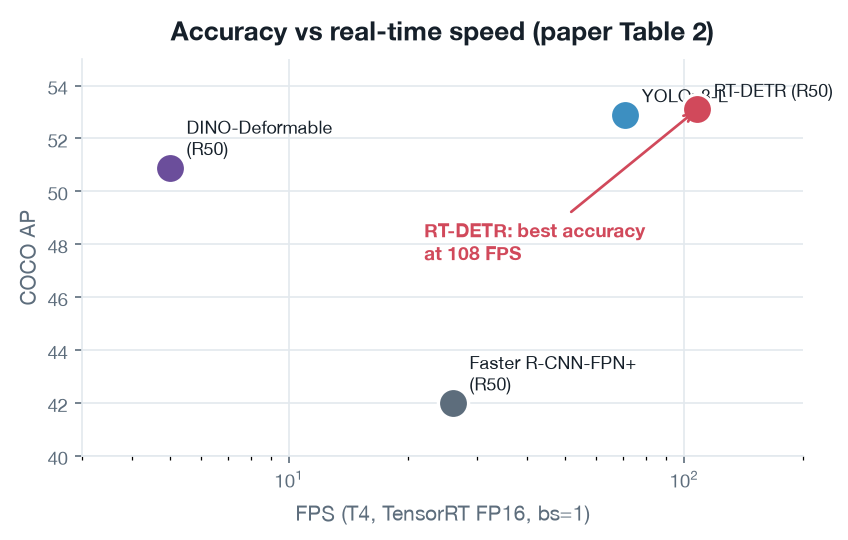

Move duplicate suppression from post-processing into learning—and redesign the compute bottleneck
Central claim — DETR learns duplicate suppression through one-to-one Hungarian matching. RT-DETR retains this principle while redesigning the encoder, query learning, and decoder for real-time inference.
Conventional detectors generate many proposals or anchors, then use heuristics and NMS to remove duplicates. DETR predicts the image’s object set in one pass.
Image backbone features
›
Transformer global context
›
100 learned queries parallel decoder
›
Object set classes + boxes
Matching before the loss
The Hungarian algorithm finds the globally optimal one-to-one assignment between prediction slots and ground-truth objects. Each object is assigned to only one slot, training the model to produce a duplicate-free set without NMS.
L = Lclass + λ1L1 + λGLGIoU
L1 directly penalizes coordinate error; GIoU supplies overlap and relative-geometry information. Under the same 15% relative error, practical check [B] measured a large/small L1 ratio of 9.44×, versus 1.000× for GIoU.

Fig. 1. L1 and GIoU response to box scale — practical check [B], synthetic boxes.
02 · THE NMS DILEMMA Accuracy–latency controls
In RT-DETR Table 1’s YOLOv8 results, raising the confidence threshold removes more candidates: NMS gets faster, but AP drops. Raising the IoU threshold suppresses fewer boxes: AP rises, but processing takes longer.
Control
AP
NMS latency
conf 0.001 → 0.05
52.9 → 51.2
2.36 → 1.06 ms
IoU 0.5 → 0.8
52.1 → 52.8
2.24 → 2.46 ms
NMS-free inference removes this threshold trade-off from post-processing and relies on one-to-one matching during training. Since YOLO speed reports commonly exclude NMS, the paper establishes an end-to-end benchmark that includes the NMS plugin.

Fig. 2. Practical check [A]: CPU, synthetic data. Raising conf 0.001→0.25 reduced time 57.03→21.29 ms and AP proxy 1.000→0.933. Absolute values are not comparable to the paper; only the direction is.
Boundary: The paper does not evaluate Video Object Detection, cross-frame identity association, or frame-level IoU. NMS-free detection is not evidence that temporal tracking is solved.
03 · PERFORMANCE CONTEXT DETR by object scale
DETR has similar overall AP to Faster R-CNN-FPN+, yet its scale-wise profile differs: stronger on large objects and weaker on small objects.

Fig. 3. DETR vs Faster R-CNN — scale breakdown from paper Table 1. APS −5.5; APL +7.8.
04 · BOTTLENECK → DESIGN Why is AIFI applied only to S5?
RT-DETR §3.2 cites a Deformable-DETR encoder accounting for 49% of GFLOPs but only 11% of AP contribution. This is a second-hand statistic from prior work—not a measurement of RT-DETR itself.
Table 3 variant
AP
Latency
A · remove encoder
43.0
7.2 ms
B · single-scale Transformer
44.9
11.1 ms
C · multi-scale Transformer
45.6
13.3 ms
D · decouple interaction/fusion
46.4
12.2 ms
DS5 · attention on S5 only
46.8
7.9 ms
E · AIFI + CCFF
47.9
9.3 ms
D: separating intra-scale interaction from cross-scale fusion is faster and more accurate than C. D→DS5: limiting attention to S5 cuts latency by about 35% and adds 0.4 AP.
AIFI applies self-attention to low-resolution, semantically rich S5 features; CNN-based CCFF fuses scales. The authors argue that lower-level features lack semantic concepts and risk “duplication and confusion” with high-level interactions.
Attention pairs ∝ M² (8400 / 400)² = 441×
This is a theoretical token-pair comparison, not a 441× end-to-end latency claim. In practical check [B], 8× more tokens (400→3200) increased measured attention time by 42.3×.

Fig. 4. Practical check [C] reproduces the paper’s latency order: A < DS5 < E < B < D < C. Absolute runtimes are not compared across hardware.

Fig. 5. CPU attention time versus token count; computational motivation for concentrating attention on S5.
05 · QUERY QUALITY What does uncertainty change?
U(X) = ‖Plocation(X) − Cclass(X)‖
Equation (2) measures disagreement between localization and classification predictions. Equation (3) puts U in the training loss so encoder features used as queries learn better-aligned class and localization quality.
47.9 → 48.7AP · +0.8
0.35 → 0.82%Prop cls
0.30 → 0.67%Prop both
In Fig. 6, purple points concentrate in the upper-right, where both classification and IoU scores are high. The reported 138% and 120% are relative count differences under score thresholds—not percentage-point gains.
Ranking ≠ loss: Public code still ranks top-K by classification score. The key change is not inference-time ranking; it is training the encoder so that features selected by that ranking are higher quality.

Fig. 6. In practical check [D], optimizing U alone led to the degenerate solution s 0.90→0.690 and q 0.20→0.693. Adding classification supervision avoids collapsing quality into mere score agreement.
06 · INFERENCE CONTROL Tune speed with decoder depth
Auxiliary prediction losses train intermediate decoder layers to predict, so inference can stop before the final layer.
Det6 output
AP
Latency
6 layers
53.1
9.3 ms
5 layers
53.0
8.8 ms
1 layer
49.1
7.0 ms
Each layer adds roughly 0.4–0.5 ms, while AP gains shrink from +2.2 (layer 1→2) to +0.1 (5→6). For deployment, eval_idx chooses the decoder output; max_det separately caps returned detections.

Fig. 7. Decoder depth provides a no-retraining inference-speed control.
The Day 07 mini-demo sometimes showed slightly higher AP at 5 layers than at 6. Its synthetic data, few objects, and short training differ from the paper’s COCO experiment: structural reproduction is not reproduction of the AP curve.
07 · RESULTS Faster and more accurate
Model
AP
APS
APL
FPS
DETR R50
42.0
20.5
61.1
28
RT-DETR R50
53.1
34.8
70.0
108
Conditional context: RT-DETR uses 640×640 and 72 epochs; DETR uses 800×1333 and 500 epochs. Different input sizes and schedules mean these are not controlled absolute speed/accuracy comparisons.

Fig. 4. Accuracy vs real-time speed — paper Table 2. RT-DETR is the only model in the top-right: highest AP at 108 FPS on T4 (TensorRT FP16, bs=1). NMS time is included for the YOLO baselines.
08 · OPEN LIMITS What remains unresolved?
RT-DETR-R50 APS is 34.8, 0.5 below YOLOv8-L at 35.3; R101 is 0.9 below its comparison model. The 49/11 statistic is second-hand, FPS depends on hardware/runtime, and the paper evaluates 2D COCO—not 3D depth estimation or multi-view detection.
09 · STUDY PROCESS Claim → evidence → boundary
We checked original tables and equations, then used matching, NMS, attention, and query-loss experiments to test directional claims. These CPU/synthetic checks are not reproductions of COCO/GPU paper results.
Takeaway: Move duplicate suppression into learning, compute into the architecture, and initialization into quality.